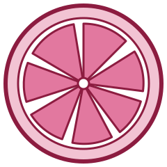

Gabriela Barroso · Nutri@gabrielabarroso.nutri
RECEITA · 10 MIN
Overnight oats de frutas vermelhas
Ingredientes
- — 3 col. (sopa) de aveia
- — 1 pote de iogurte natural
- — 1 col. (chá) de chia
- — ½ xíc. de frutas vermelhas
- — Canela a gosto
Modo de preparo
Misture tudo num pote, finalize com as frutas e deixe na geladeira durante a noite. De manhã, é só comer!
café da manhã pronto ✨

Salve a receita